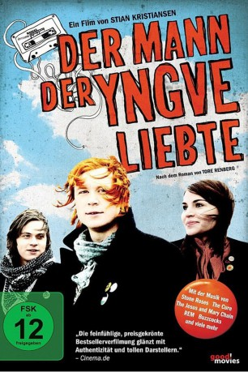
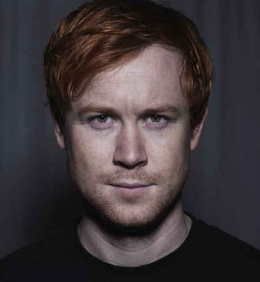

#8981 Der Jarle Klepp 1 - Mann, der Yngve liebte
 
 IMDB-Wertung: 7.0 / 10
IMDB-Wertung: 7.0 / 10  Metascore: 0
Metascore: 0 
Im November 1989, als die Mauer in Berlin gefallen ist, lebt in Stavanger in Norwegen ein Junge namens Jarle. Er hat eine großartige Freundin, hat gerade eine Rocknband gegründet und alles läuft in geregelten Bahnen. Als dann aber ein neuer Mitschüler kommt, gerät Jarles Leben aus den Fugen, denn Yngve bedeutet ihm mehr als ihm das lieb ist.
Jahr: 2008
Dauer: 91 Minuten
FSK: 12
Land: Norwegen Studio: Sandrew Metronome NorgeTonspuren:
Untertitel:
Auflösung: SD (718x436) Größe: 900 MB
Genre: Drama, Musik, Komödie, Liebe
Regisseur: Stian Kristiansen
Drehbuch: Tore Renberg
Soundtrack: John Erik Kaada
Darsteller:
-  Rolf Kristian Larsen als Jarle Klepp
 Arthur Berning als Helge Ombo
Arthur Berning als Helge Ombo- Ida Elise Broch als Cathrine Halsnes
- Ole Christoffer Ertvaag als Yngve Lima
- Jørgen Langhelle als Terje Orheim - Jarles far
 Vegar Hoel als Johannes Svensen
Vegar Hoel als Johannes Svensen Kristoffer Joner als Frisør Tom
Kristoffer Joner als Frisør Tom- Trine Wiggen als Sara Klepp - Jarles mor
- Knut Sverdrup Kleppestø als Andreas
- Andreas Cappelen als Naturfaglærer
- Mari Langfeldt als Høyre-Anita
- Erlend Stene als Oljeungen
- Lasse Holdhus als Rulle
- Marko Iversen Kanic als Stegasen
- Stian Aase als Liten gutt på Storhaug
- Oda Olave Nordli als Ine Lima
- Karoline Krüger als Unni Lima Yngves mor
- Bjørn Ravn Carlsen als Dørvakt
- Sigurd Holter als Lydmann Folken
- Gaute Garlid als Bartender
- Emilie Houge als Anette
- Åshild Helgevold als En Storhaug-frue
- Øyvind Tendenes als Postmann
- Anette Walland als Kugjentene #1
- Mia Melvær als Kugjentene #2
- Simon Harmer als Mighty Dogfood Band
- Steffen-Andre Schreuder als Mighty Dogfood Band
- Arve Hinderaker als Mighty Dogfood Band
- Helgar Nygaard als Mighty Dogfood Band
Datei: X:\3-Trilogie(G-M)\Jarle Klepp\Jarle Klepp 1 - Mann, der Yngve liebte, Der (2008, FSK12, 718x436).mkv seit 16.05.2018
Festplatte: HD Collection-2(A-Z)-3(A-M)
 Alle Filme aus Gruppe '3-Trilogie(G-M)\Jarle Klepp'
Alle Filme aus Gruppe '3-Trilogie(G-M)\Jarle Klepp'